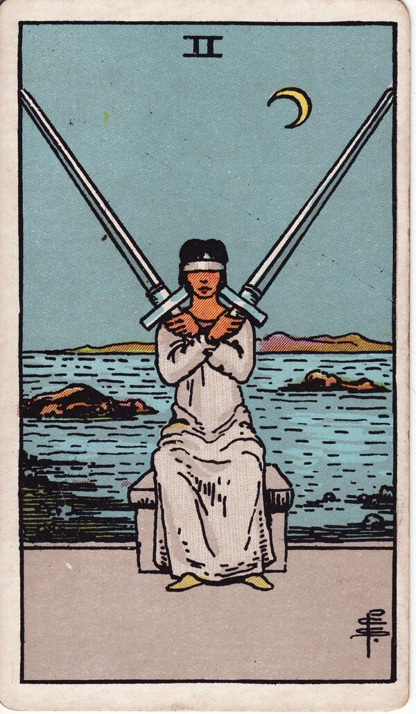

Minor Arcana · Suit of Swords
Two of Swords Tarot Card Meaning
The Two of Swords is the blindfold and the standoff - a decision avoided, an uneasy truce. Want to know what it means in your spread? Every reader on our line is hand-vetted - connect in under 60 seconds, $1 for your first minute, hang up anytime.
- Hand-vetted readers
- Available 24/7
- Hang up anytime

Two of Swords - What It Shows
A blindfolded figure sits with two crossed swords held over her chest, a choppy sea and a crescent moon behind her. The blindfold is willful - she's chosen not to see - and the crossed blades are a defensive stalemate. After the clarity of the Ace, the Two is its refusal: a decision that must be made, and a heart and mind braced against making it.
Two of Swords Upright Meaning
Upright, the Two of Swords is a stalemate, an impasse, or a decision being avoided. You're holding two options in perfect, exhausting balance and refusing to look at either - often to protect yourself from a truth you already sense. Its core message: take the blindfold off and choose.
Two of Swords Reversed Meaning
Reversed, the standoff ends. Information comes to light, the decision is finally made, or the avoided truth surfaces. Less positively, the dam breaks into overwhelm - emotions flooding back once the blindfold is off.
Two of Swords in Love & Relationships
In love, the Two of Swords is a choice being avoided, a relationship at an impasse, or refusing to feel what you already feel. Example: a caller "weighing options" between staying and leaving drew this card; the read named the blindfold - she wasn't undecided, she was avoiding a decision she'd already half-made - and the work was facing it honestly.
Two of Swords in Career & Money
For work it's a stalled decision, a deadlock, or refusing to look at the data. Example: someone frozen between two job paths pulled this card; the message was that the paralysis itself was the problem - gather the missing information and decide, because the standoff costs more than the wrong choice would.
Two of Swords as Advice
As advice: stop avoiding. Take off the blindfold, get the information you've been refusing to look at, and make the decision - the impasse is more damaging than the choice.
Two of Swords Reversed in Love & Career
Reversed, this card deserves a closer look by area. In love, the better read is a long impasse finally breaking - a truth spoken, a decision made, clarity returning; the harder read is emotional overwhelm once you stop avoiding, or being forced to face something. In career, reversed it's a deadlock resolving, hidden information surfacing, or a choice made under pressure rather than calmly. The reversed Two turns on whether the blindfold is coming off by choice or by force. A live reader can tell you which, and what's behind it.
What People Ask About the Two of Swords
The questions readers hear most about this card:
"Does it mean I have to choose?"
Yes - and that you've been avoiding it. The card is about the stalemate.
"Two of Swords as feelings?"
Conflicted, guarded, "I don't want to look at how I feel."
"Is it a blocked or stuck relationship?"
Often - an impasse or a truce that isn't really peace.
"Will it resolve?"
Reversed leans yes; upright says not until you decide.
Two of Swords - Yes or No?
It's a "no answer yet" - a stalemate, not a verdict. Reversed leans toward resolution as the decision is finally made.
Two of Swords Timing in a Reading
Timing is the least precise thing tarot does, so treat this as a lean, not a date. The Two of Swords describes a held pause more than a moving event - readers usually frame it as unresolved until you decide rather than a set number of days. Reversed signals the decision point is near or being forced. A live reader reads timing from the full spread and your question far more reliably than the card alone.
Two of Swords Card Combinations
Context changes everything - a few pairings readers see often:
Two of Swords + Ace of Swords
The stalemate broken by sudden clarity and a decision.
Two of Swords + The Moon
Avoiding a choice because fear and illusion cloud it.
Two of Swords + High Priestess
The answer is already known intuitively - stop blocking it.
Two of Swords in a Tarot Reading
A meanings page is the map; a live reading is the territory. The Two of Swords shifts with its position and the cards around it - which is what a hand-vetted reader interprets for your question. See the full Suit of Swords, all 56 cards on the Minor Arcana hub, or start a phone tarot reading.
← Ace of Swords · Next: Three of Swords →
What Does the Two of Swords Mean for You?
A meanings list is the map; a live reading is the territory. We'll connect you with the right hand-vetted tarot reader in under 60 seconds. $1/min first call · 15 minutes for $10 · hang up anytime · 100% satisfaction promise.
Call (888) 920-6662 NowTwo of Swords - Frequently Asked Questions
What does the Two of Swords mean?
A stalemate or avoided decision - blindfolded, refusing to face a choice.
What does it mean reversed?
The stalemate breaking, information revealed, or emotional overwhelm.
What does the Two of Swords mean in love?
A difficult choice avoided, an impasse, or refusing to face what you feel.
Is it a yes or no card?
"No answer yet" - a stalemate; reversed leans toward resolution.
How much does a reading cost?
First-time callers pay $1/min, or 15 minutes for $10, and you can hang up anytime.
Get Your Tarot Reading Now
Connected to a hand-vetted reader in under 60 seconds, the cards pulled on your real question, and you hang up with clarity.
Call (888) 920-6662